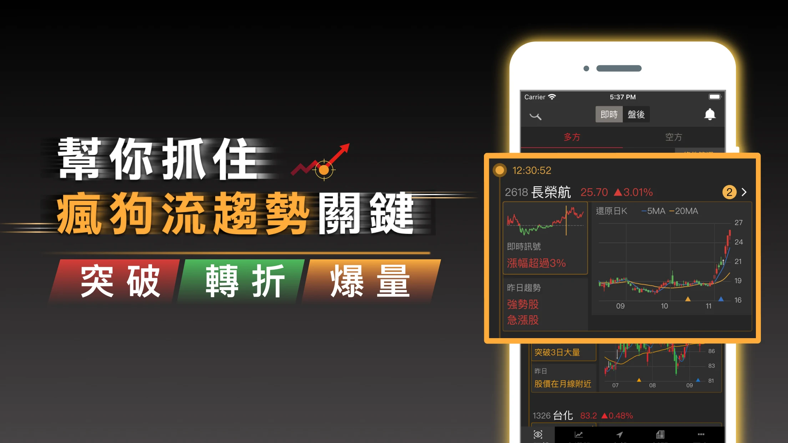
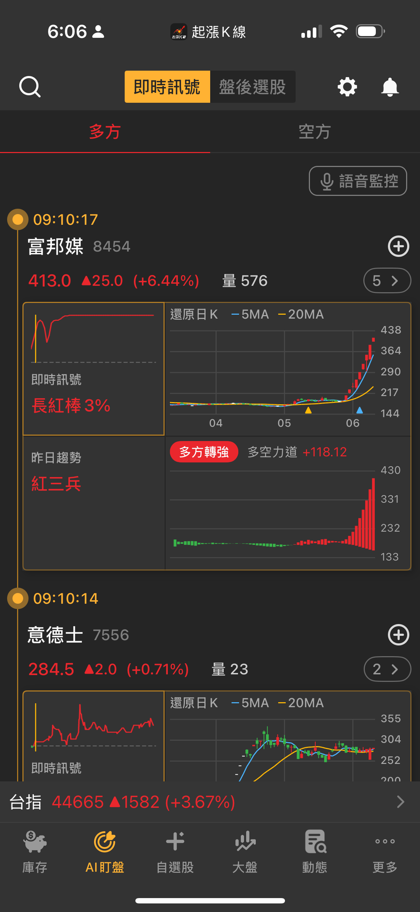

起漲K線
AI 自動盯盤的飆股起漲監測工具！
即時監控全台上市櫃股票，掌握飆股發動訊號與多空趨勢變化，幫你快速找到強勢股、看懂進出場時機，投資不再錯過大波段行情。

Why 起漲K線 ?
🚀好的進場點，往往比選到好股票更關鍵
9種強勢指標 x 6種量增指標，抓住動能起漲機會
從上漲突破、箱型突破到V轉表態，自動偵測關鍵訊號，讓你不花時間盯盤，也能掌握進場時機。 透過系統化訊號掌握股票強弱變化，幫你提高波段操作效率，避開錯過行情與高點進場的風險。
六大核心功能，輕鬆抓住起漲點
獨家AI盯盤
透過今日盤中即時訊號與昨日趨勢的事件標記，同時掌握個股的短線、長線動向
個股K線技術型態
分析重要K棒型態，辨識股價走勢，並提供相似個股推薦，協助選股決策
技術條件選股
根據技術型態與市場數據，內建多種多空方策略，輕鬆選出投資潛力股
動能關鍵指標
提供多種資金動能關鍵指標的監控條件選擇，根據你的投資偏好自動監控市場趨勢
到價語音監控
提供AI盯盤、自選股、庫存持股的即時訊號播報，讓用戶快速掌握市場變化
個股多空分析
快速掌握技術、籌碼、價量、基本四大面向的股票分析，提升決策效率
✦ 點擊上方功能卡片可切換預覽畫面

六大核心功能，輕鬆抓住起漲點
1
獨家AI盯盤
透過今日盤中即時訊號與昨日趨勢的事件標記，同時掌握個股的短線、長線動向
2
個股K線技術型態
分析重要K棒型態，辨識股價走勢，並提供相似個股推薦，協助選股決策
3
技術條件選股
根據技術型態與市場數據，內建多種多空方策略，輕鬆選出投資潛力股
4
動能關鍵指標
提供多種資金動能關鍵指標的監控條件選擇，根據你的投資偏好自動監控市場趨勢
5
到價語音監控
提供AI盯盤、自選股、庫存持股的即時訊號播報，讓用戶快速掌握市場變化
6
個股多空分析
快速掌握技術、籌碼、價量、基本四大面向的股票分析，提升決策效率